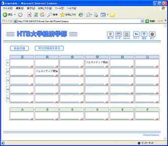

|
 割り付けと閉講 割り付けと閉講
左図のように，いくつかのコマに同じ科目を割り付けて構いません．「講義」として独立して扱われます．クラスの事情が大きく違うようであれば，科目を複製して別な科目を作る方がいいかもしれません．複製には，エクスポート機能とインポート機能を使います．一度エクスポートして，それをインポートすると別な科目として扱うことができます．前節科目作成 に，エクスポートボタンがあります．また同じく に，エクスポートボタンがあります．また同じく にインポートボタンがあります．どちらもクリックするだけですから試してみてください． にインポートボタンがあります．どちらもクリックするだけですから試してみてください．
割付を解除すると，講義の閉講になります．
手順 まではまったく同じですが， まではまったく同じですが， で解除を選びます．解除ボタンで閉講すると，講義データは全て消去されます． で解除を選びます．解除ボタンで閉講すると，講義データは全て消去されます．
|
|
 |
 開講までの操作
開講までの操作